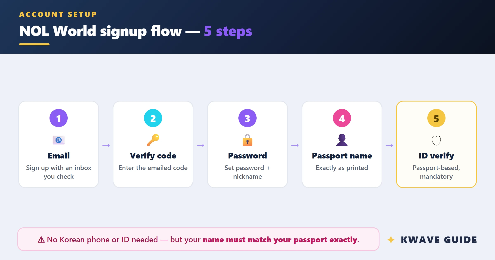
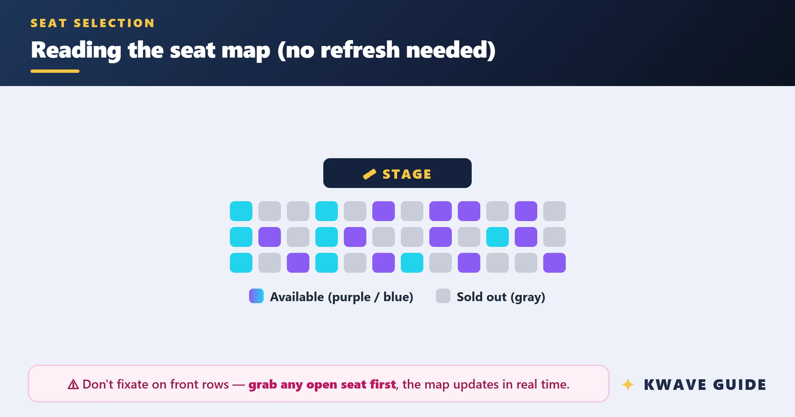

每年飞韩国看演唱会，我用 interpark 把整套购票流程串成了一条链
从查场次、身份验证到支付取票，以前要跨四个平台反复折腾，现在一套流程跑下来——这篇文章讲 interpark 怎么嵌进我的 K-pop 演唱会工作流。
每年春秋两季，我都会飞韩国蹲几场 K-pop 演唱会。以前这件事对国际粉丝来说就是一场噩梦：不同经纪公司走不同票务平台、韩国站要身份证我没有、信用卡付到一半被银行风控拦了、到了场馆还找不到取票窗口。
我试过把这些环节拆在四五个 App 里同时跑，但每次还是会在某个节点断掉。直到我把 interpark官网 当作整条链的中枢重新搭了一遍——从查场次到入场，一条线走下来，中间少了至少两次手动切换和三次重复输入。
旧流程的断点：每个环节都可能卡死
以前我都是临时抱佛脚：快开票了才去搜信息，搜到 interpark 的韩国站发现要 i-PIN 验证直接劝退；换 Melon Ticket 试，又是韩国手机号收短信卡住；实在不行找 Klook 加价买，座位随机分配就算了，有时候国际配额根本抢不到。就算侥幸付了款，到了场馆还得绕着圈找 Global Ticket Counter，找到之后才发现护照上的名字和系统里差了一个连字符，工作人员让我在旁边等半小时协调。
这些问题本质上不是某一个平台的锅，而是我从来没把它们放在同一条流程里想。我总是在环节出了问题才去补下一环，而不是提前把每个环节的前置条件都准备好。
新流程：interpark 作为中枢，前后衔接四个动作
现在我把整套流程固定成了五步，interpark 是贯穿始终的主线。
第一步：用 interpark 查场次，同步确认经纪公司归属
这是整条链的起点。我打开 interpark下载 的手机 App，先在演唱会分类里扫一遍最近三个月的日程。韩国的票务逻辑很有意思——HYBE 旗下的艺人（BTS、SEVENTEEN、NewJeans）几乎全部走 NOL World，SM、JYP、YG 的则分流到 Yes24 或 smtown.com，独立艺人可能走 Melon Ticket 或 ticket.interpark.com 韩国站。我以前不知道这层关系，瞎搜一通浪费了很多时间。
interpark 的优势在于它能同时看到自己平台和 NOL World 的排期，相当于帮我先过滤了一遍。如果我看中的场次走 NOL World，那后面四步全部在 interpark 体系内就能走完；如果是其他平台的，我会立刻换方案——比如 SM 的演出直接去 smtown.com，独立艺人的走 Klook 或找 KTO 认证代理，不在 interpark 上耗。
第二步：提前 3-7 天完成护照验证
这是我以前最容易忘的一步。2024 年 7 月之后，NOL World 对 HYBE 艺人的演唱会强制要求 Verified Member，而完成这个身份验证只需要在 interpark 或 NOL World 的 App 里上传一张护照个人信息页的照片。
具体操作是（步骤可以对照 interpark文档 走，写得更详细）：Setting → Account → Verification → Start Verification。系统先用 OCR 自动提取护照上的姓名，和你注册时填的姓名做比对。如果匹配，就进入后台人工审核队列，通常 1-24 小时出结果。我会特意在开票前 3-7 天做这个动作，留出缓冲期——万一 OCR 识别有问题、或者审核超时了，还有时间补救。
护照照片要拍好：平铺在白纸上、自然光、四角完整、不要用闪光灯拍反光页面。我第一次拍的照片因为反光被判定模糊重拍了一次，后来就把拍好的原始照片存在手机相册里，方便以后对比。

第三步：开票前一天的银行预授权，和 interpark 配合使用
这是整条链里最容易被忽略但影响最大的一环。很多人明明卡没问题、3-D Secure 也开了，但支付就是被拒——原因是银行风控系统把来自韩国票务平台的大额消费标记成了可疑交易。
我现在每次开票前一天上午，会打银行客服电话做两件事：一是把当天在 NOL World / Interpark 的消费做预授权，告诉客服具体日期、商户名、金额范围（演唱会门票一般 80-200 美元）、以及我用来购票的信用卡后四位；二是在 interpark App 的支付设置里把 3-D Secure 确认流程重新走一遍，确保没问题。
如果有两张不同发行商的卡，两张都预授权。万一其中一张在排队高峰期被风控临时收紧，另一张可能还能用。社区的实测数据说，预授权能把支付失败率从 15-30% 降到 3-15%——这个提升在抢票争分夺秒的时候差别很大。
第四步：开票日在 interpark 排队购票
开票日当天我提前 15 分钟打开 interpark App，登录后直接进入目标场次的排队页面。排队界面会显示当前等待人数和预计等待时间，这个信息比我以前用 Melon Ticket 时的"位置 X"要直观得多。
进入支付环节时，interpark 会自动跳转到我预存的信用卡，7 分钟倒计时从支付页面打开那一刻开始算。这时候预授权就体现作用了——卡不会被拒，支付能在 2 分钟内完成。
第五步：演出当天 Global Ticket Counter 取票
购票成功后，确认邮件会发到我注册的邮箱里，里面有一串 Reservation Number。我把这串号码截图存手机、同时抄在一张便签上，到了场馆直接找 Global Ticket Counter。
不同场馆的窗口位置不一样——Gocheok Sky Dome 在主入口两侧、KSPO Dome 在 1 号口附近、Olympic Hall 在 3 号口内。演出前 1-2 天场馆会在 Instagram 或 Twitter 上发具体位置，我通常提前查好。到了之后排 2-3 小时提前过去，避开演出前 30 分钟的高峰期。
取票只需要护照原件 + Reservation Number，工作人员会刷护照上的芯片和数据库里的购票记录做自动比对。这一步最怕的就是护照姓名和系统不匹配——连字符被系统转成了空格、或者注册时省略了中间名。所以我在注册 NOL World 账户时会特意对照护照，一个字符一个字符地填。

效果和边界：这套流程什么时候划算
跑完这五步，从查场次到拿到实体票，中间我需要打开的 App 不超过三个——interpark 贯穿全程，偶尔需要去 Klook 看独立艺人的备选方案，银行 App 用来确认预授权记录。以前这件事要跨五个以上的平台反复切换，现在基本在一条链上就能走完。
不过这套流程也有它的适用边界。如果你看的不是 HYBE 旗下艺人，那 interpark 只是查场次的入口，真正的购票环节可能要换到其他平台。另外，护照验证和银行预授权都是一次性准备的事，但必须提前做——抢票当天临时抱佛脚大概率卡壳。
还有一个我踩过的坑：帮朋友一起买票的话，每张票只能由购票记录里的护照持有人本人领取。你不能替朋友取票，朋友也不能替你取。我以前不知道这条规则，帮朋友代抢了一张票结果两个人都白跑了一趟。
我把这套流程记在 Notion 里，每次开票前对着清单走一遍。这样做的好处是，你永远知道下一步该打开哪个 App、该准备什么材料，而不是像以前那样在焦虑中到处找信息。interpark 本身只是一个票务 App，但当你把它当作整套工作流的中枢来用的时候，它能帮你把散落在各处的环节串成一条可预测、可重复的路径。
这些资料我同步放在了 GitHub 的 APK 仓库、Gitee 的 镜像 和 GitCode 的 备份，国内网络环境下 Gitee 和 GitCode 访问通常更顺畅。